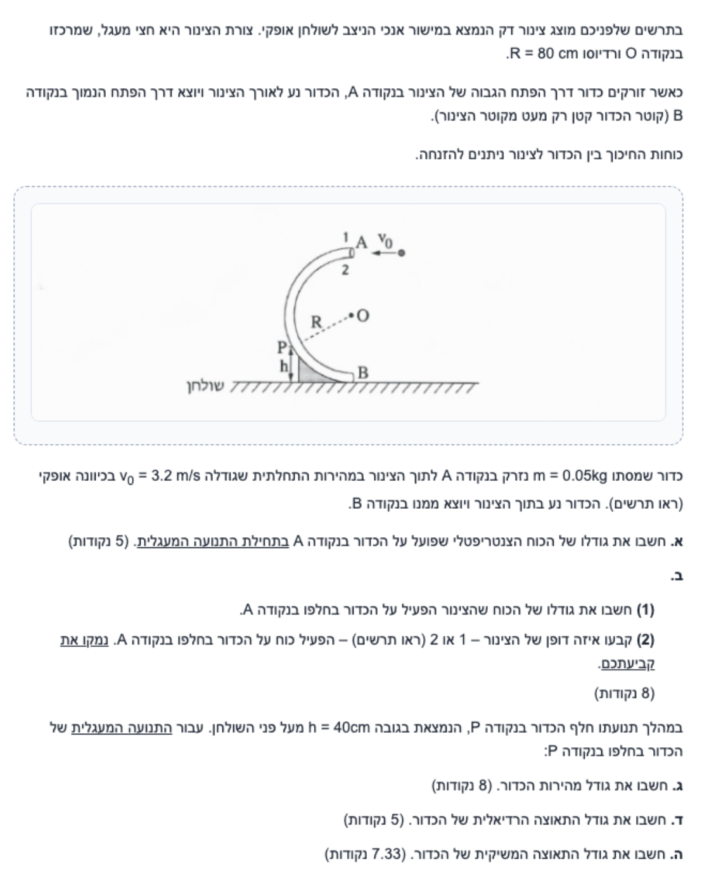
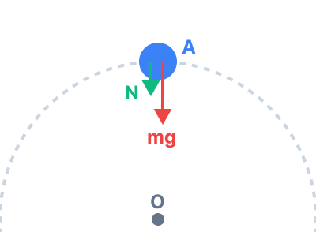
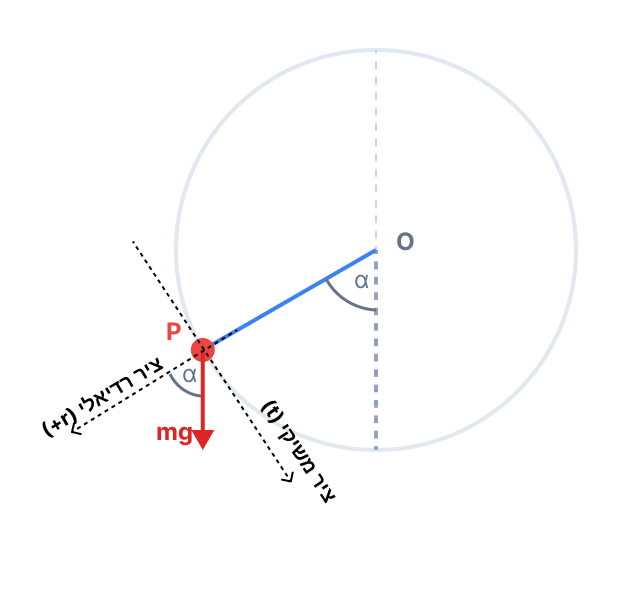

פתרון מוסבר ופדגוגי, מודרך צעד-אחר-צעד

כדי לחשב את הכוח הצנטריפטלי נעזר בחוק השני של ניוטון לתנועה מעגלית, \(\Sigma F_R = m a_R\), ובנוסחת התאוצה הרדיאלית \(a_R = \frac{v^2}{R}\) מתוך דף הנוסחאות.
נציב את הנתונים ישירות לתוך הביטוי לכוח הרדיאלי השקול:
שימו לב! "כוח צנטריפטלי" הוא לא כוח חדש שמופיע בטבע, אלא פשוט השם שאנחנו נותנים לשקול הכוחות (הסכום של כוח הכובד, הנורמל וכו') שמצביע אל עבר מרכז המעגל וגורם לגוף לשנות את כיוון תנועתו. התאוצה הרדיאלית אחראית אך ורק לשינוי הכיוון, ולא משנה את גודל המהירות.
נשתמש בחוק השני של ניוטון \(\Sigma\vec{F} = m\vec{a}\) ובנוסחה לכוח הכבידה \(F = mg\). נבצע תרשים כוחות מלא לכדור הנמצא בשיא הגובה.
תרשים הכוחות (FBD) לכדור בנקודה A מציג את כוח הכובד \( mg \) המצביע כלפי מטה (לכיוון מרכז המעגל O). נניח שגם הכוח הנורמלי \( N_A \) שהצינור מפעיל דוחף כלפי מטה.

נבנה את משוואת הכוחות בכיוון הרדיאלי (חיובי כלפי מטה):
נציב את שקול הכוחות שחישבנו בסעיף הקודם ואת מסת הכדור:
מדוע כיוון הציר חשוב כל כך? בחרנו את הכיוון למטה כחיובי, כי לשם מכוונת התאוצה הרדיאלית. אם היינו מנחשים שהכוח הנורמלי כלפי מעלה וכותבים במשוואה \( mg - N_A = m a_R \), היינו מקבלים תוצאה שלילית עבור \( N_A \). הסימן השלילי היה מספר לנו שהכיוון האמיתי של הכוח הוא הפוך מזה שניחשנו – כלומר, כלפי מטה!
כוח נורמלי (Normal Force) הוא כוח דחייה המופעל על ידי משטח, והוא תמיד פועל בניצב למשטח ודוחף את הגוף הרחק ממנו.
מכיוון שהכדור דורש בנקודה A שקול כוחות רדיאלי של \( 0.64 \text{ N} \) כלפי מטה אל מרכז המעגל, וכוח הכובד מספק רק \( 0.5 \text{ N} \) מתוכו, יש צורך בכוח נוסף ש"ידחוף" את הכדור כלפי מטה. הדופן שיכולה לדחוף את הכדור כלפי מטה היא אך ורק הדופן שנמצאת מעליו. הדופן העליונה באיור היא דופן מספר 1.
אפשר גם לחשוב על כך מנקודת מבטו של הכדור: בגלל המהירות האופקית הגבוהה שלו, הוא שואף "להיזרק" החוצה מהמעגל בגלל ההתמדה. לכן הוא נצמד אל הדופן החיצונית (דופן 1), והיא בתגובה דוחפת אותו חזרה פנימה כדי לאלץ אותו להמשיך בתנועה המעגלית.
נשתמש בחוק שימור אנרגיה מכנית, שכן כוחות החיכוך זניחים, והכוח הנורמלי שהצינור מפעיל לא מבצע עבודה (הוא תמיד ניצב לכיוון התנועה). נעזר בנוסחאות מדף הנוסחאות: לאנרגיה קינטית \(E_k = \frac{1}{2}mv^2\) ולאנרגיה פוטנציאלית כובדית \(U_G = mgh\).
נשווה את האנרגיה המכנית הכוללת בנקודה A לאנרגיה בנקודה P:
נצמצם את המסה \( m \) מכל איברי המשוואה, כי היא אינה שווה לאפס. נשים לב שזה אומר שהמהירות בלתי תלויה במסת הכדור!
ככל שהכדור יורד בצינור, האנרגיה הפוטנציאלית שלו פוחתת ומומרת לאנרגיה קינטית, ולכן גודל המהירות גדל. שימו לב שפתרנו את הבעיה בצורה חלקה מבלי להיעזר בכוחות ומשוואות תנועה מורכבות, וזו הגדולה של שימוש בחוק שימור האנרגיה!
תאוצה רדיאלית תלויה אך ורק במהירות הרגעית וברדיוס הסיבוב, והיא ניתנת על ידי הנוסחה \(a_R = \frac{v^2}{r}\).
נציב ישירות את הנתונים למשוואת התאוצה הרדיאלית:
שימו לב להבחנה חשובה: התאוצה הרדיאלית \( a_R \) אינה התאוצה הכוללת של הגוף. זהו רק הרכיב של התאוצה שמכוון אל מרכז המעגל, ותפקידו לשנות את כיוון המהירות. אם גם גודל המהירות משתנה, קיימת בנוסף תאוצה משיקית \( a_T \), שתפקידה לשנות את גודל המהירות. לכן בתנועה מעגלית לא קצובה צריך לחשוב על שני רכיבי תאוצה שונים.
התאוצה המשיקית נובעת משקול הכוחות בכיוון המשיק לתנועה, לפי החוק השני של ניוטון \(\Sigma F_T = m a_T\). עלינו למצוא את רכיב כוח הכובד המקביל למשיק המסלול על ידי טריגונומטריה פשוטה.
ראשית, נמצא את הזווית של הנקודה P. נגדיר את \( \alpha \) להיות הזווית בין הרדיוס OP לבין האנך היורד מטה מ-O.

ההפרש האנכי בין מרכז המעגל לנקודה P הוא: \( \Delta y = h_O - h_P = 0.8 - 0.4 = 0.4 \text{ m} \).
בתוך המשולש ישר הזווית שנוצר, הניצב שליד הזווית \( \alpha \) הוא ההפרש האנכי, והיתר הוא רדיוס המעגל \( R \):
הכוח היחיד שיש לו רכיב בכיוון המשיק הוא כוח הכובד. על פי פירוק וקטורים, רכיבו המשיקי הוא \( mg \sin(\alpha) \) (שכן הרכיב הרדיאלי הוא לפי \( \cos(\alpha) \)).
נרשום את חוק שני של ניוטון עבור הציר המשיקי:
שוב המסה \( m \) מצטמצמת ונשאר:
שמתם לב שגודל התאוצה המשיקית תלוי אך ורק בזווית שבה הכדור נמצא, ולא במהירות שלו באותו רגע? התאוצה המשיקית היא זו שגורמת לכך שגודל המהירות גדל לאורך המסלול כאשר הכדור יורד, ממש כמו גוף המחליק על מישור משופע שזווית השיפוע שלו משתנה בכל רגע.